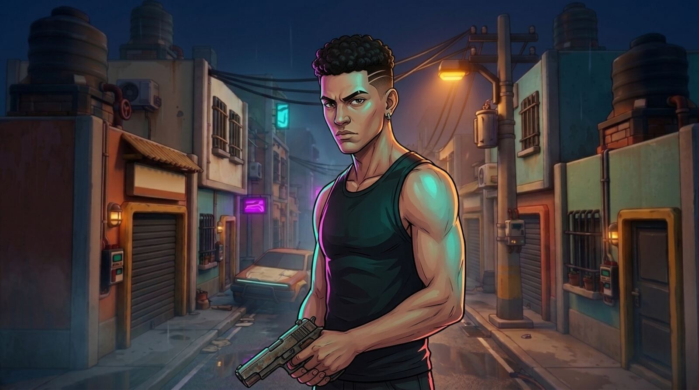
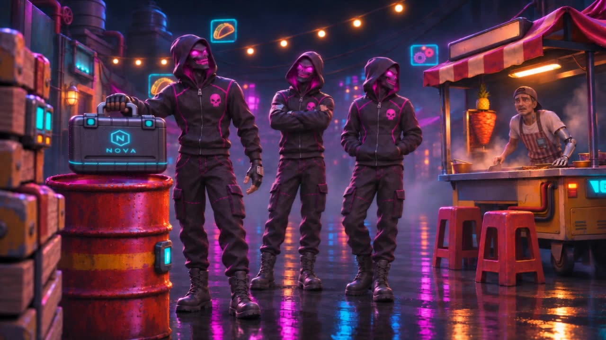
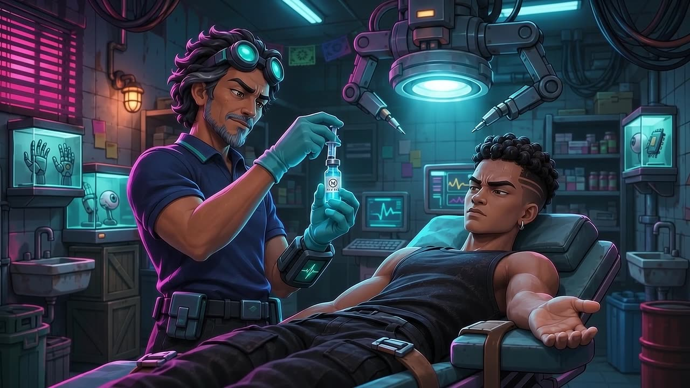
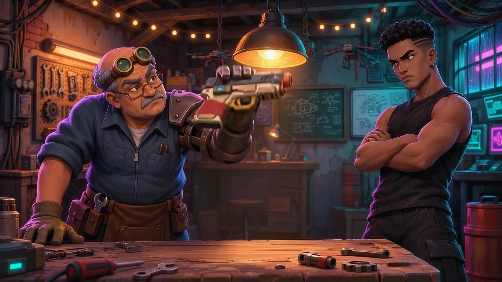
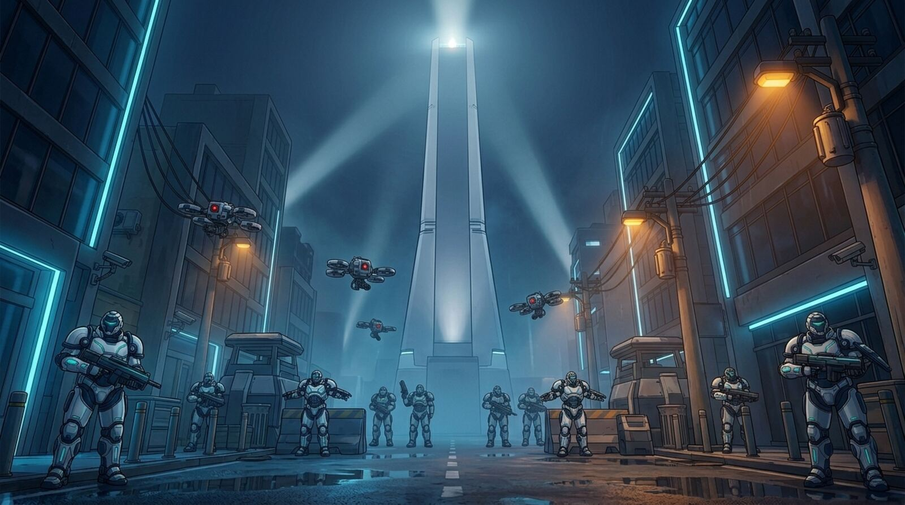
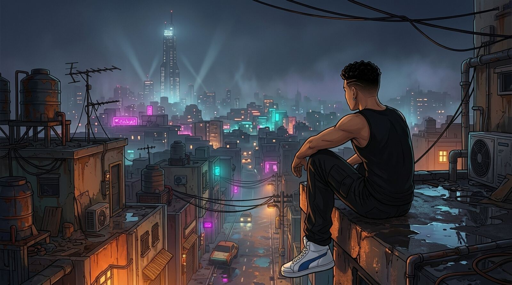

Una ciudad amurallada. Cámaras en cada esquina. Un maletín que no era tuyo. Y una sola noche para escapar… o regresar.
Teclas: → ← pasar clip · Espacio reproducir/pausar · F pantalla completa · H ocultar el HUD. "Seguido" encadena todo como película; apágalo para pasar frame por frame y hablar tú encima.
Cyber City es una ciudad amurallada controlada por NOVA. La gente vive vigilada por cámaras, entre tecnología y crueldad, y la pandilla de los SKULLS mantiene a todos con miedo.
De niño vivía en el campo con su mamá y su hermano, y todavía guarda ese recuerdo. Ahora vive solo en los Suburbios y los SKULLS lo molestan. Una noche toma un maletín de NOVA… y todo cambia.




Al salir de con Tino empieza la cacería, sin avisos. Cada fase dura un tiempo o hasta que matas a cierto número: lo que pase primero te sube a la siguiente. Los refuerzos llegan poco a poco, los SKULLS te atacan en su zona en todas las fases y los enemigos sueltan munición y botiquines.
Pantalla final (números de muestra). REINTENTAR te deja justo después del campo de tiro, con tu arma, mejoras y dinero; se guarda tu mejor récord.
Cuadras cortas, calles que doblan y callejones. Carros y motos que puedes robar y manejar, cámaras de NOVA y la ranura del muro.
